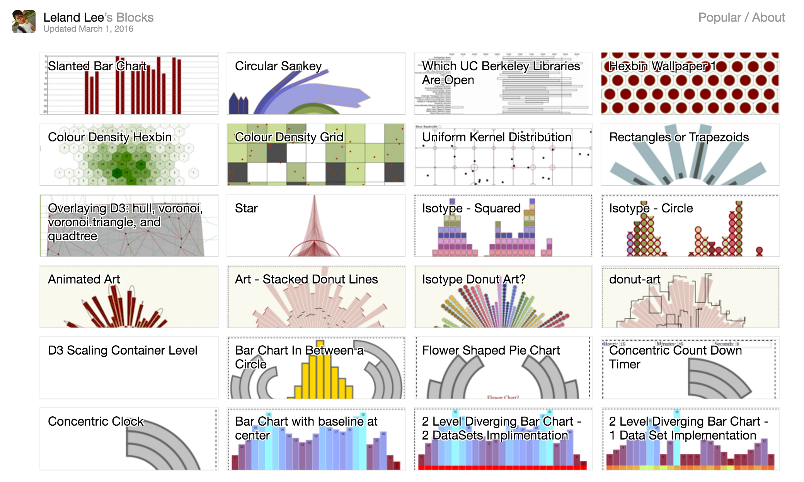

Random things that I've done
So I use to Iframe my visualisation from at bl.ocks.org/lelandlee, however until it began to violate a Content Security Policy directive... So click on the image below to see a more updated version of my visualizations....
I was rather tempted just to iFrame my resume.....So I did
I mean why not...it automatically updates...